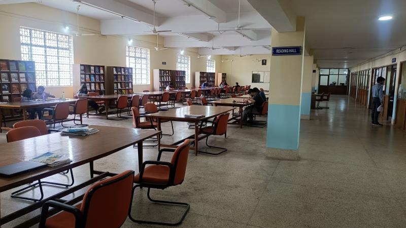
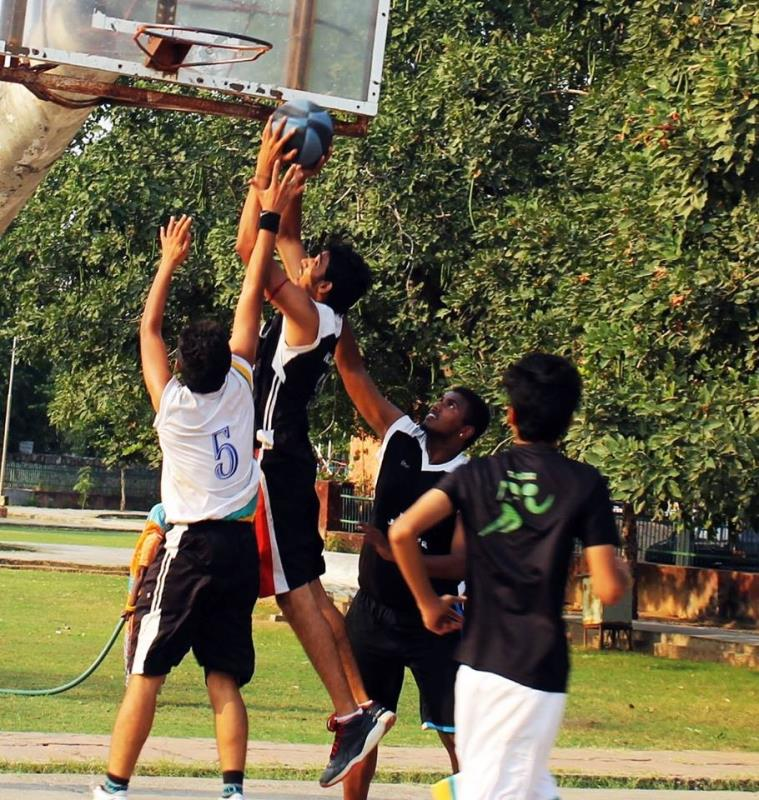
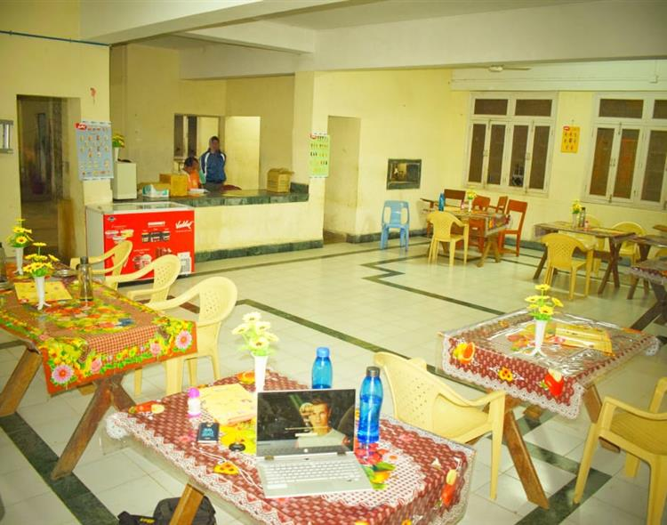

Course we Offer
I have shown the necessary determination, hard work and initiative that have helped me to succeed.
I would bring these skills and my experience to this course and demonstrate my passion to learn and understand more about this subject
to help myself and others in the future.
Intermediate
An intermediate course typically represents the next level of complexity and depth in a particular subject or skill set. Building upon foundational knowledge acquired in beginner-level courses, intermediate courses delve into more advanced concepts, techniques, and applications.
Degree
An institution of higher learning, especially one providing a general or liberal arts education rather than technical or professional training.
Compare university. A constituent unit of a university, furnishing courses of instruction in the liberal arts and sciences, usually leading to a bachelor's degree.
Post Graduation
Postgraduate education, graduate education, or graduate school consists of academic or professional degrees, certificates, diplomas, or other qualifications usually pursued by post-secondary students who have earned an undergraduate degree.
Our global campus
A campus is by tradition the land on which a college or university and related institutional buildings are situated. Usually a college campus includes libraries, lecture halls, residence halls, student centers or dining halls, and park-like settings.
Our Facilities
Colleges provide a range of facilities to support students in their academic and personal growth. These include well-equipped classrooms with modern teaching aids, extensive libraries for research, laboratories for hands-on learning, and sports facilities to promote physical well-being.
On-campus housing in hostels or dormitories is often available, along with cafeterias offering meals.

World Class Library
College libraries are vital hubs of academic life, serving as dynamic resources for students and faculty alike. These repositories of knowledge offer a diverse collection of books, journals, and electronic resources that cater to the curriculum and research needs of various disciplines. College libraries also provide a quiet and conducive environment for individual study or group collaboration.

Largest Plat Ground
College playgrounds serve as vibrant spaces that contribute to the overall student experience. These areas go beyond traditional sports fields, encompassing spaces for recreational activities, social interactions, and fitness. College playgrounds are essential for promoting physical well-being, offering students a break from academic pressures.

Tasty and Healthy Food
College cafeterias are bustling hubs that play a central role in the campus experience. These spaces go beyond mere dining areas, serving as social hubs where students gather to share meals, exchange ideas, and build connections. College cafeterias offer a diverse range of food options to cater to various tastes and dietary preferences, providing a convenient and communal setting for students to fuel up during their busy schedules.
What Our Student Says
Students often express a mix of sentiments about their college experiences. Some praise the academic opportunities, diverse courses, and knowledgeable faculty, appreciating the chance to pursue their passions and interests. Others value the vibrant campus life, diverse student body, and the friendships formed during this transformative period. However, concerns such as the cost of education, workload stress, and the need for improved campus facilities may also be voiced.

"Bit Mesra College offers a robust academic environment with excellent faculty and modern facilities, fostering a strong learning culture."
Vani

"While Bit Mesra College provides a diverse range of courses, some students express concerns about the need for improved infrastructure and more industry-oriented curriculum."
Jack
Enroll For Our Varoius Online Courses
Anywhere From The World
CONTACT US